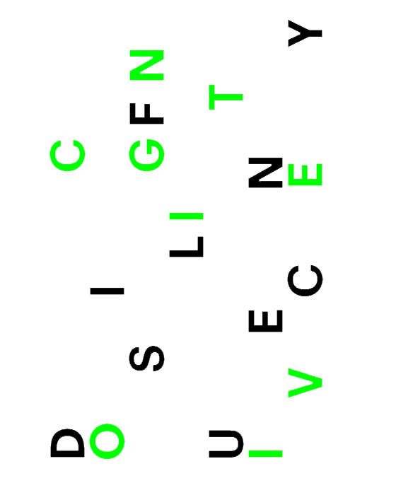
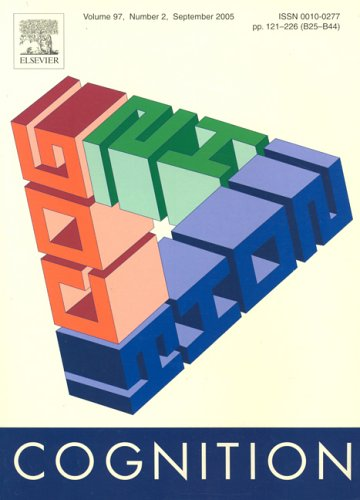
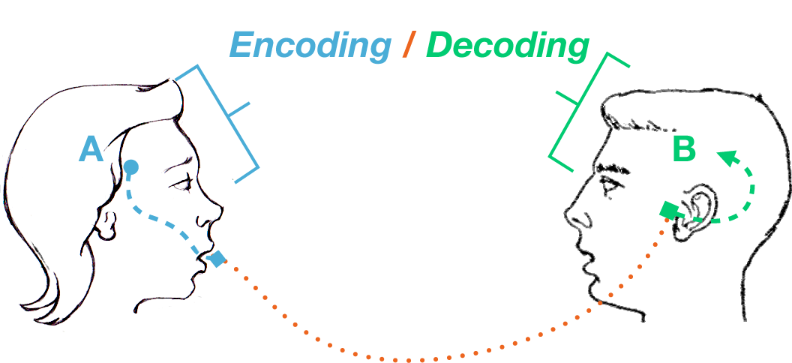
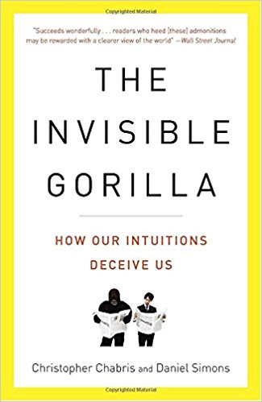
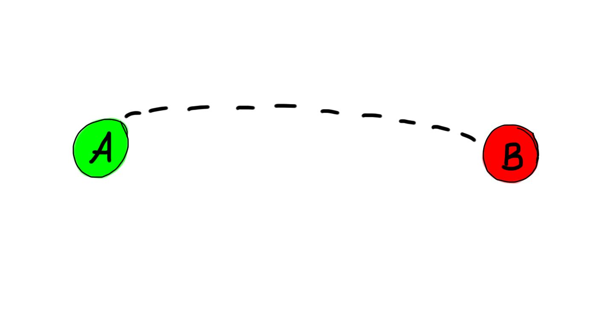
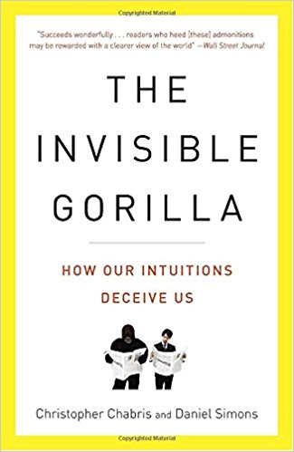
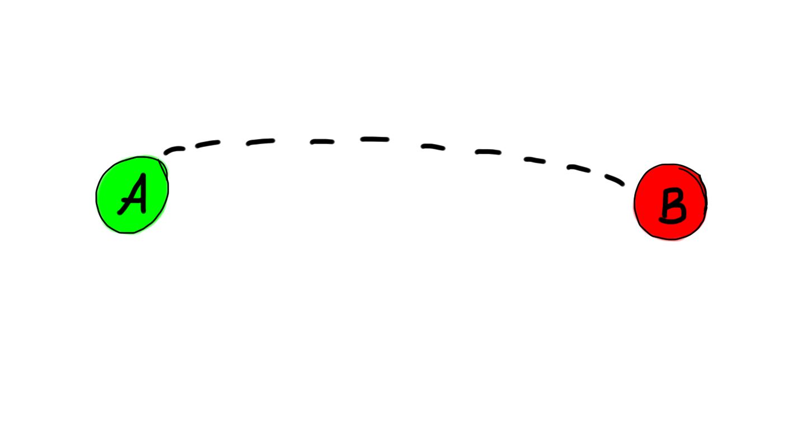

In January 2011, a trio of researchers published the results of an experiment in which they demonstrated that students who read material in difficult, unfamiliar fonts learned it more deeply than students who read the same material in conventional, familiar fonts.
Strange as that may seem, the finding stems from a well-established principle in learning theory called cognitive disfluency, which has fascinating implications for our work as teachers.
As the researchers pointed out in their article in the journal Cognition, both students and teachers may sometimes judge the success of a learning experience by the ease with which the learner processes or “encodes” the new information. But learning material easily, or fluently, may sometimes produce shallower levels of learning.
By contrast, “making material harder to learn,” the authors wrote, “can improve long-term learning and retention. More cognitive engagement leads to deeper processing, which facilitates encoding and subsequently better retrieval.” In other words, when students encounter cognitive disfluency, and have to put in more work in processing the material, it may sink in more deeply.
To test that principle, the researchers compared the learning results of two groups of subjects in a lab at Princeton University. Both groups were asked to memorize information about three (fictional) species of aliens that was presented to them in a way designed to mimic the biologic taxonomies they would learn in a typical introductory science course. One group read material in a common black font (Arial), and one read it in more unusual and difficult gray-scale fonts (Comic Sans MS and Bodoni MT).
The subjects had 90 minutes to memorize as much of the material as they could. Following a 15-minute delay, they were tested on their recall. The group that had read the alien taxonomies in unusual fonts scored, on average, 14 percentage points higher than the group that had processed the material in the more familiar font.
To find out if their results were more than a laboratory anomaly, the researchers produced a second experiment with the cooperation of a high school in Ohio.
They asked teachers in six courses to send in their supplementary materials for a unit, such as worksheets and PowerPoint slides. In each case, the instructor was teaching two sections of the same course. One set of materials, for the control group, was returned unedited to the teachers; the other set was manipulated into the more difficult fonts. After the unit was completed in each course—time periods that ranged from a week to a month—the researchers looked at how students had performed on tests of the material.
Once again, the results suggested that the difficult fonts produced better retention of the content. Although the contrast was not as striking as what the researchers had seen in the lab, it was statistically significant.
In their book The Invisible Gorilla: How Our Intuitions Deceive Us, the psychologists Christopher Chabris and Daniel Simons recount the results of an experiment by another set of researchers. It offers an equally fascinating example of how disfluency during the learning process can produce greater retention of learned material. In this experiment, learners were shown two pairs of sentences:
- “Joey’s big brother punched him again and again. The next day his body was covered by bruises.”
- “Joey’s crazy mother became furiously angry with him. The next day his body was covered with bruises.”
A clear causal connection exists between the first pair of sentences. By contrast, as Chabris and Simons point out, “To understand the second pair of sentences, you must make an extra logical inference that you don’t need in order to make sense of the first pair.” And the result of the extra work you have to do in processing the second pair of sentences leads to the creation of a “richer and more elaborate memory for what you’ve read.”
To put this as (over)simply as possible, learning material in fluent conditions— easy-to-read fonts, clear causal connections—is like driving to the grocery store on cognitive automatic pilot. You get from Point A to Point B, but you are not really paying close attention, and, hence, are unlikely to remember your trip in any detail later.
Learning material in disfluent conditions would be like driving to a grocery store in England if you are an American, having to navigate an unfamiliar route from the other side of the road. Getting the job done in such challenging conditions compels you to slow down and think more carefully, and so you are much more likely to remember details of the experience.
If we want our students to form what Chabris and Simons call a “richer and more elaborate memory” for our course material, the implication seems to be that we should find ways to force them out of their normal learning and processing modes and into states of cognitive disfluency. Print all of our course material in strange fonts, leave logical gaps that students have to close, or find other ways to push them out of automatic pilot. Make them drive on the wrong side of the road.
But, of course, if we push them too hard toward disfluency, we may end up discouraging them and shutting off their learning altogether. After all, if someone hands me a book in an eye-straining font, I may decide it’s too much trouble to read. If I find someone’s explanation of a difficult topic full of logical holes, I may write it off as not worthy of my time to consider.
The challenge that we face, then, is to create what psychologists call “desirable difficulties”: enough cognitive disfluency to promote deeper learning, and not so much that we reduce the motivation of our students.
I have been puzzling over that challenge for months now, ever since I encountered the concept during the research and writing I have been doing about key principles of cognitive theory and their implications for college teaching.
Rather than continue to bang my solitary little head against the wall, I decided to pose this challenging puzzle to the participants in a workshop I was leading last month at the Institute for Pedagogy in the Liberal Arts, a gem of a teaching conference held each May on the campus of Oxford College of Emory University.
I asked the group to identify strategies that would be grounded in specific courses they taught, but generalizable to a wider variety of disciplines. After proposing many approaches, we noticed that we could group them together into a small handful of techniques, the top four of which are as follows:
- Ask students to process or translate course material using unusual rhetorical or expressive modes. I have always listened with skepticism to accounts of teachers asking their students to translate course concepts into 140-character status updates. But my workshop participants argued that having students take concepts and rework them in the form of a text message, or a Twitter update, or even visual representations or performances, could have the same defamiliarizing effect that might be achieved by a change in fonts.
- Require students to argue on behalf of unfamiliar positions. One of my participants was a political scientist who asks her students to debate issues in the Arab-Israeli conflict—and routinely requires them to argue against their personally held convictions. Another participant, who teaches a course for medical students on abortion, does the same. In both cases, they observed, students are forced into the uncomfortable and defamiliarizing position of having to look at a well-trod debate from a new angle.
- Ask students to find or identify mistakes. A professor of architecture noted that he occasionally makes mistakes while doing calculations on the board, and that his students had learned to watch out for those errors and correct him. A math professor then pointed out that he would sometimes deliberately seed mistakes into assigned problems and ask students to find them. In both cases students were nudged out of the mode of simply observing or running through the problems on automatic pilot. That may seem like an artificial technique, or like playing games with students—but only until you stop and think about how many jobs require people to review presentations, problems, performances, or communications and make sure they are mistake-free.
- Plan for failure. A faculty member in chemistry said you can wake students up by asking them to undertake short experiments that are designed to fail. Rather than simply going through the motions of a lab, and finding the expected result planned for them by the teacher, students learn what every experienced researcher in the world knows: that experiments, like scholarly research of any kind, almost never proceed exactly as you planned them, and that you can learn a lot from your failures.
I suspect that my workshop participants and I barely scratched the surface of techniques that might push students out of their familiar ways of thinking.
I invite readers of The Chronicle to continue the conversation we started, and offer their own suggestions for creating cognitive disfluency in the classroom. (For a fuller list of suggestions from our workshop, and a list of the faculty members who developed the ideas described here, please see my Web site, at www.jamesmlang.com.)
   


